Browse transcription factors.
196 recommended matrices curated from experimental and computational studies. Each record links to the original benchmarking evidence and source material.
ABF1
↗
DNA binding protein with possible chromatin-reorganizing activity involved in transcriptional activation, gene silencing, and DNA replicatio
ABF2
↗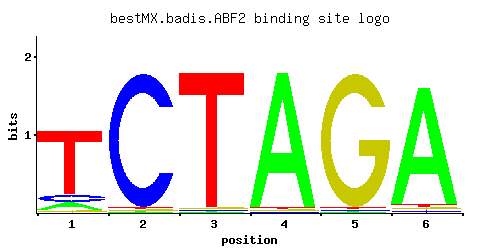
Mitochondrial DNA-binding protein involved in mitochondrial DNA replication and recombination, member of HMG1 DNA-binding protein family; ac
ACA1
↗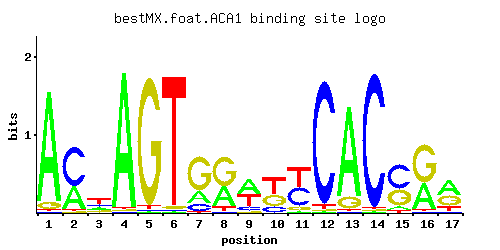
Basic leucine zipper (bZIP) transcription factor of the ATF/CREB family, may regulate transcription of genes involved in utilization of non-
ACE2
↗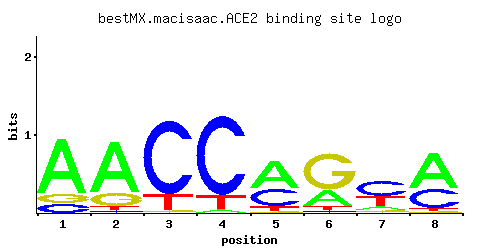
Transcription factor that activates expression of early G1-specific genes, localizes to daughter cell nuclei after cytokinesis and delays G1
ADR1
↗
Carbon source-responsive zinc-finger transcription factor, required for transcription of the glucose-repressed gene ADH2, of peroxisomal pro
AFT1
↗
Transcription factor involved in iron utilization and homeostasis; binds the consensus site PyPuCACCCPu and activates the expression of targ
AFT2
↗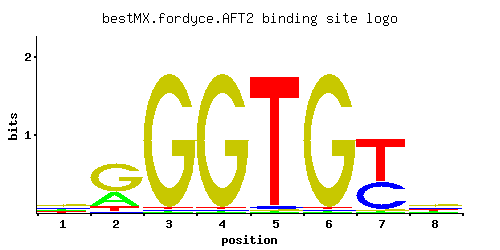
Iron-regulated transcriptional activator; activates genes involved in intracellular iron use and required for iron homeostasis and resistanc
ARG80
↗
Transcription factor involved in regulation of arginine-responsive genes; acts with Arg81p and Arg82p
ARG81
↗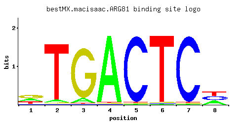
Zinc-finger transcription factor of the Zn(2)-Cys(6) binuclear cluster domain type, involved in the regulation of arginine-responsive genes;
ARO80
↗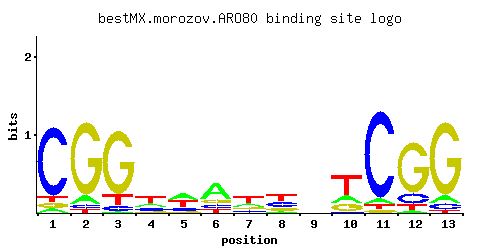
Zinc finger transcriptional activator of the Zn2Cys6 family; activates transcription of aromatic amino acid catabolic genes in the presence
ARR1
↗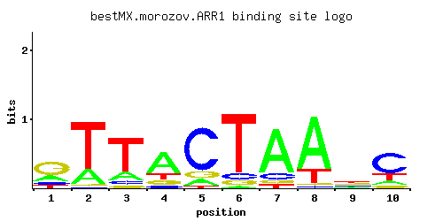
Transcriptional activator of the basic leucine zipper (bZIP) family, required for transcription of genes involved in resistance to arsenic c
ASG1
↗
Zinc cluster protein proposed to function as a transcriptional regulator involved in the stress response; null mutants have a respiratory de
ASH1
↗
Zinc-finger inhibitor of HO transcription; mRNA is localized and translated in the distal tip of anaphase cells, resulting in accumulation o
AZF1
↗
Zinc-finger transcription factor, involved in induction of CLN3 transcription in response to glucose; genetic and physical interactions indi
BAS1
↗
Myb-related transcription factor involved in regulating basal and induced expression of genes of the purine and histidine biosynthesis pathw
CAD1
↗
AP-1-like basic leucine zipper (bZIP) transcriptional activator involved in stress responses, iron metabolism, and pleiotropic drug resistan
CAT8
↗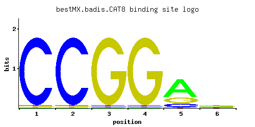
Zinc cluster transcriptional activator necessary for derepression of a variety of genes under non-fermentative growth conditions, active aft
CBF1
↗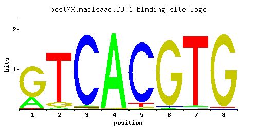
Helix-loop-helix protein that binds the motif CACRTG, which is present at several sites including MET gene promoters and centromere DNA elem
CEP3
↗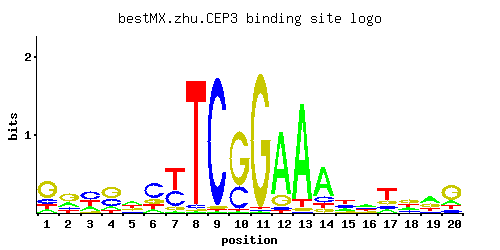
Essential kinetochore protein, component of the CBF3 complex that binds the CDEIII region of the centromere; contains an N-terminal Zn2Cys6
CHA4
↗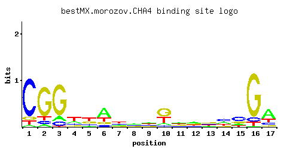
DNA binding transcriptional activator, mediates serine/threonine activation of the catabolic L-serine (L-threonine) deaminase (CHA1); Zinc-f
CIN5
↗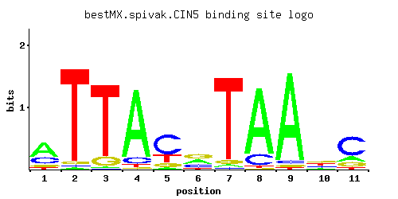
Basic leucine zipper (bZIP) transcription factor of the yAP-1 family, mediates pleiotropic drug resistance and salt tolerance; nuclearly loc
CRZ1
↗
Transcription factor that activates transcription of genes involved in stress response; nuclear localization is positively regulated by calc
CST6
↗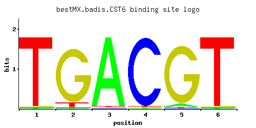
Basic leucine zipper (bZIP) transcription factor of the ATF/CREB family, proposed to be a regulator of oleate responsive genes; involved in
CUP2
↗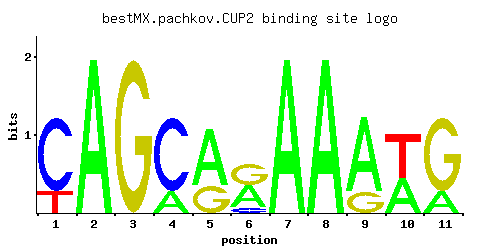
Copper-binding transcription factor; activates transcription of the metallothionein genes CUP1-1 and CUP1-2 in response to elevated copper c
CUP9
↗
Homeodomain-containing transcriptional repressor of PTR2, which encodes a major peptide transporter; imported peptides activate ubiquitin-de
DAL80
↗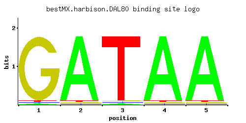
Negative regulator of genes in multiple nitrogen degradation pathways; expression is regulated by nitrogen levels and by Gln3p; member of th
DAL81
↗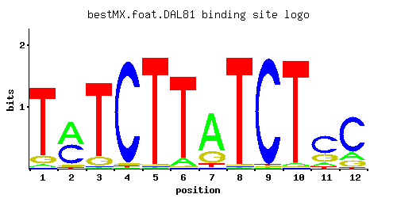
Positive regulator of genes in multiple nitrogen degradation pathways; contains DNA binding domain but does not appear to bind the dodecanuc
DAL82
↗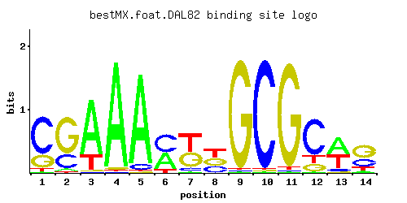
Positive regulator of allophanate inducible genes; binds a dodecanucleotide sequence upstream of all genes that are induced by allophanate;
DIG1
↗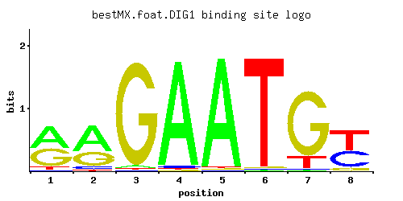
Regulatory protein of unknown function, constitutively-expressed, involved in the regulation of mating-specific genes and the invasive growt
DOT6
↗
Protein involved in rRNA and ribosome biogenesis; binds polymerase A and C motif; subunit of the RPD3L histone deacetylase complex; similar
ECM22
↗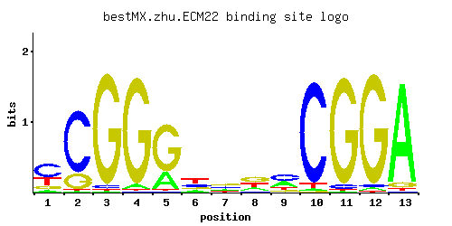
Sterol regulatory element binding protein, regulates transcription of sterol biosynthetic genes; contains Zn[2]-Cys[6] binuclear cluster; ho
ECM23
↗
Non-essential protein of unconfirmed function; affects pre-rRNA processing, may act as a negative regulator of the transcription of genes in
EDS1
↗
Putative zinc cluster protein; YBR033W is not an essential gene
ERT1
↗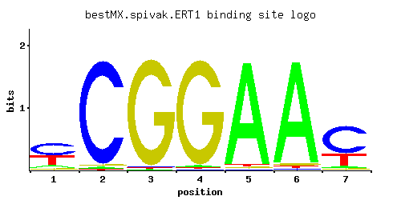
Transcriptional regulator of nonfermentable carbon utilization; GFP-fusion protein localizes to cytoplasm, nucleus; null mutation affects pe
FHL1
↗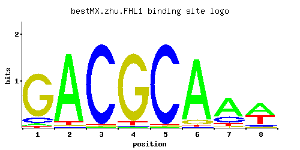
Regulator of ribosomal protein transcription; has forkhead associated domain that binds phosphorylated proteins; also has forkhead DNA-bindi
FKH1
↗
Forkhead family transcription factor with a minor role in the expression of G2/M phase genes; negatively regulates transcriptional elongatio
FKH2
↗
Forkhead family transcription factor with a major role in the expression of G2/M phase genes; positively regulates transcriptional elongatio
FZF1
↗
Transcription factor involved in sulfite metabolism, sole identified regulatory target is SSU1, overexpression suppresses sulfite-sensitivit
GAL4
↗
DNA-binding transcription factor required for the activation of the GAL genes in response to galactose; repressed by Gal80p and activated by
GAL80
↗
Transcriptional regulator involved in the repression of GAL genes in the absence of galactose; inhibits transcriptional activation by Gal4p;
GAT1
↗
Transcriptional activator of genes involved in nitrogen catabolite repression; contains a GATA-1-type zinc finger DNA-binding motif; activit
GAT3
↗
Protein containing GATA family zinc finger motifs
GAT4
↗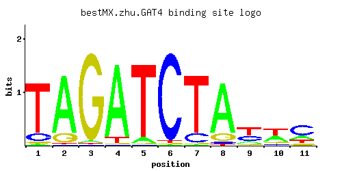
Protein containing GATA family zinc finger motifs
GCN4
↗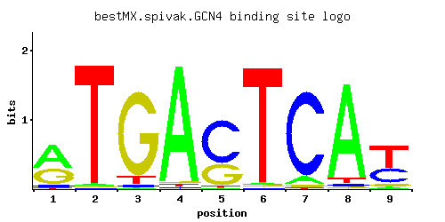
Basic leucine zipper (bZIP) transcriptional activator of amino acid biosynthetic genes in response to amino acid starvation; expression is t
GCR1
↗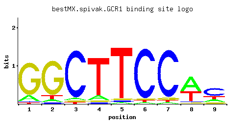
Transcriptional activator of genes involved in glycolysis; DNA-binding protein that interacts and functions with the transcriptional activat
GCR2
↗
Transcriptional activator of genes involved in glycolysis; interacts and functions with the DNA-binding protein Gcr1p
GIS1
↗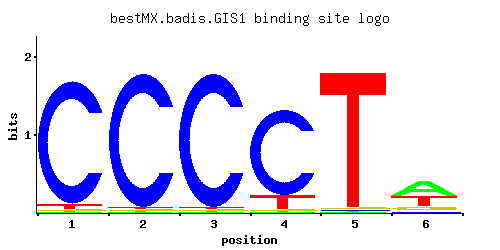
JmjC domain-containing histone demethylase; transcription factor involved in expression of genes during nutrient limitation and in negative
GLN3
↗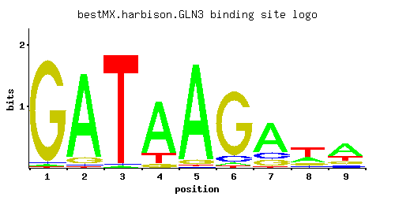
Transcriptional activator of genes regulated by nitrogen catabolite repression (NCR), localization and activity regulated by quality of nitr
GSM1
↗
Putative zinc cluster protein of unknown function; proposed to be involved in the regulation of energy metabolism, based on patterns of expr
GTS1
↗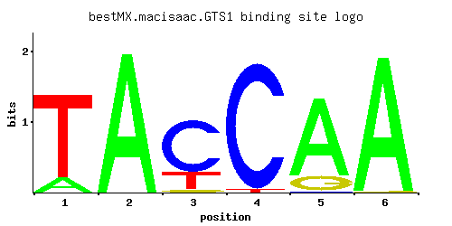
Arf3p GTPase Activating Protein (GAP) that localizes to endocytic patches; gts1 mutations affect budding, cell size, heat tolerance, sporula
GZF3
↗
GATA zinc finger protein and Dal80p homolog that negatively regulates nitrogen catabolic gene expression by competing with Gat1p for GATA si
HAC1
↗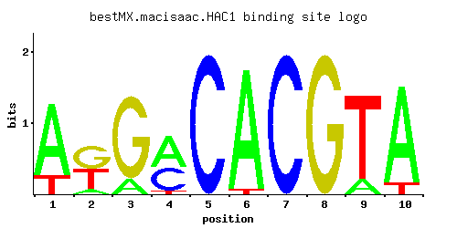
Basic leucine zipper (bZIP) transcription factor (ATF/CREB1 homolog) that regulates the unfolded protein response, via UPRE binding, and mem
HAL9
↗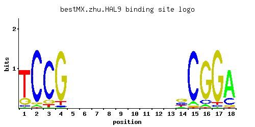
Putative transcription factor containing a zinc finger; overexpression increases salt tolerance through increased expression of the ENA1 (Na
HAP1
↗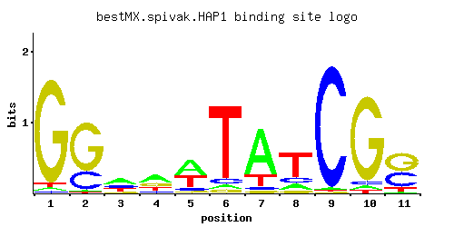
Zinc finger transcription factor involved in the complex regulation of gene expression in response to levels of heme and oxygen; the S288C s
HAP2
↗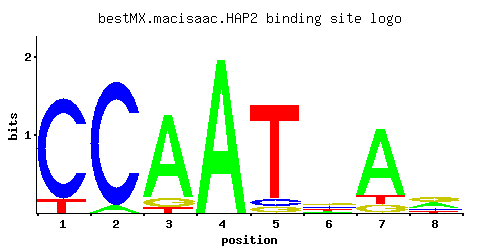
Subunit of the heme-activated, glucose-repressed Hap2p/3p/4p/5p CCAAT-binding complex, a transcriptional activator and global regulator of r
HAP3
↗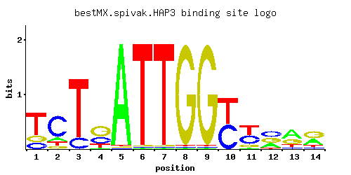
Subunit of the heme-activated, glucose-repressed Hap2p/3p/4p/5p CCAAT-binding complex, a transcriptional activator and global regulator of r
HAP4
↗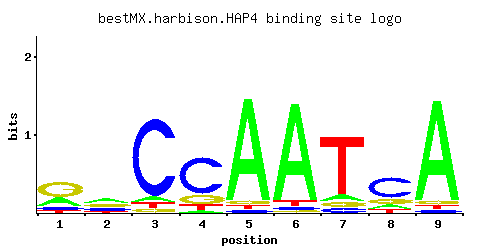
Subunit of the heme-activated, glucose-repressed Hap2p/3p/4p/5p CCAAT-binding complex, a transcriptional activator and global regulator of r
HAP5
↗
Subunit of the heme-activated, glucose-repressed Hap2/3/4/5 CCAAT-binding complex, a transcriptional activator and global regulator of respi
HCM1
↗
Forkhead transcription factor that drives S-phase specific expression of genes involved in chromosome segregation, spindle dynamics, and bud
HMRA2
↗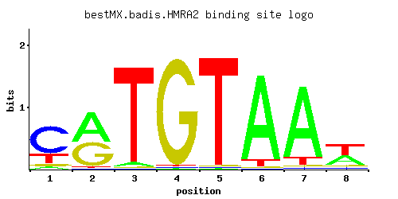
Silenced copy of a2 at HMR; similarity to Alpha2p; required along with a1p for inhibiting expression of the HO endonuclease in a/alpha HO/HO
HMS1
↗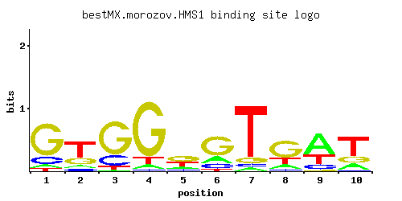
Basic helix-loop-helix (bHLH) protein with similarity to myc-family transcription factors; overexpression confers hyperfilamentous growth an
HSF1
↗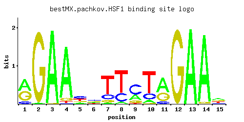
Trimeric heat shock transcription factor, activates multiple genes in response to stresses that include hyperthermia; recognizes variable he
IME1
↗
Master regulator of meiosis that is active only during meiotic events, activates transcription of early meiotic genes through interaction wi
INO2
↗
Component of the heteromeric Ino2p/Ino4p basic helix-loop-helix transcription activator that binds inositol/choline-responsive elements (ICR
INO4
↗
Transcription factor required for derepression of inositol-choline-regulated genes involved in phospholipid synthesis; forms a complex, with
IXR1
↗
Protein that binds DNA containing intrastrand cross-links formed by cisplatin, contains two HMG (high mobility group box) domains, which con
JHD1
↗
JmjC domain family histone demethylase specific for H3-K36, similar to proteins found in human, mouse, drosophila, X. laevis, C. elegans, an
LEU3
↗
Zinc-finger transcription factor that regulates genes involved in branched chain amino acid biosynthesis and ammonia assimilation; positivel
LYS14
↗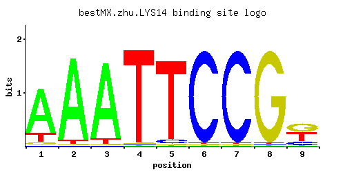
Transcriptional activator involved in regulation of genes of the lysine biosynthesis pathway; requires 2-aminoadipate semialdehyde as co-ind
MAC1
↗
Copper-sensing transcription factor involved in regulation of genes required for high affinity copper transport
MATA1
↗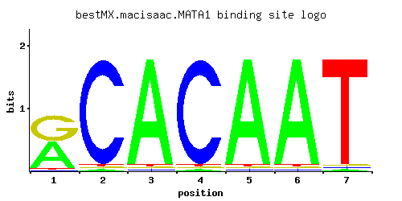
Expressed copy (at MATa) of a1; homeobox-domain protein that, along with alpha2, represses transcription of haploid-specific genes in diploi
MATA2
↗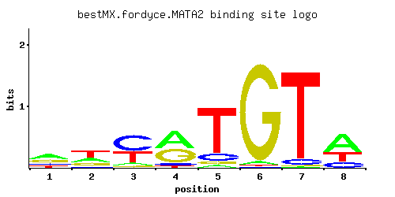
Protein of unknown function, identical to the C-terminal 119 amino acid residues of the MATalpha2 protein; a2 sequence is not present in SGD
MATALPHA2
↗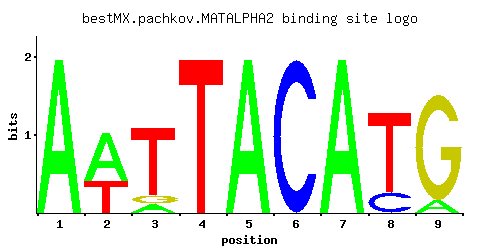
Homeobox-domain protein that, with Mcm1p, represses a-specific genes in haploids; acts with A1p to repress transcription of haploid-specific
MBP1
↗
Transcription factor involved in regulation of cell cycle progression from G1 to S phase, forms a complex with Swi6p that binds to MluI cell
MCM1
↗
Transcription factor involved in cell-type-specific transcription and pheromone response; plays a central role in the formation of both repr
MET28
↗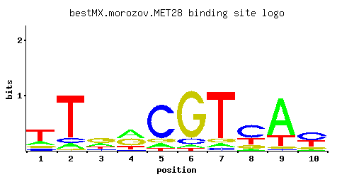
Basic leucine zipper (bZIP) transcriptional activator in the Cbf1p-Met4p-Met28p complex, participates in the regulation of sulfur metabolism
MET31
↗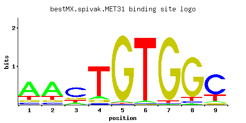
Zinc-finger DNA-binding protein, involved in transcriptional regulation of the methionine biosynthetic genes, similar to Met32p
MET32
↗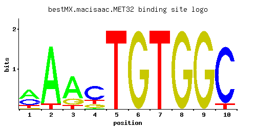
Zinc-finger DNA-binding protein, involved in transcriptional regulation of the methionine biosynthetic genes, similar to Met31p
MET4
↗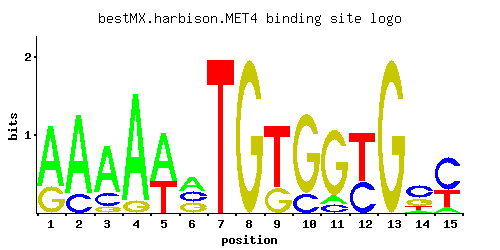
Leucine-zipper transcriptional activator, responsible for the regulation of the sulfur amino acid pathway, requires different combinations o
MGA1
↗
Protein similar to heat shock transcription factor; multicopy suppressor of pseudohyphal growth defects of ammonium permease mutants
MIG1
↗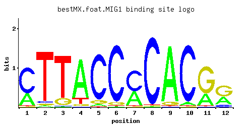
Transcription factor involved in glucose repression; sequence specific DNA binding protein containing two Cys2His2 zinc finger motifs; regul
MIG2
↗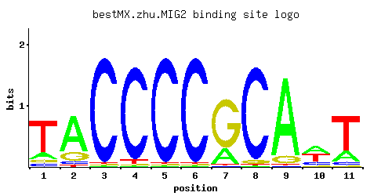
Protein containing zinc fingers, involved in repression, along with Mig1p, of SUC2 (invertase) expression by high levels of glucose; binds t
MIG3
↗
Probable transcriptional repressor involved in response to toxic agents such as hydroxyurea that inhibit ribonucleotide reductase; phosphory
MOT2
↗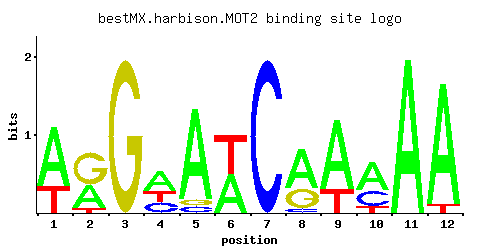
Subunit of the CCR4-NOT complex, which has roles in transcription regulation, mRNA degradation, and post-transcriptional modifications; with
MOT3
↗
Nuclear transcription factor with two Cys2-His2 zinc fingers; involved in repression of a subset of hypoxic genes by Rox1p, repression of se
MSN1
↗
Transcriptional activator involved in regulation of invertase and glucoamylase expression, invasive growth and pseudohyphal differentiation,
MSN2
↗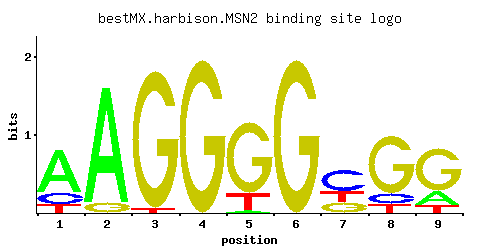
Transcriptional activator related to Msn4p; activated in stress conditions, which results in translocation from the cytoplasm to the nucleus
MSN4
↗
Transcriptional activator related to Msn2p; activated in stress conditions, which results in translocation from the cytoplasm to the nucleus
NDD1
↗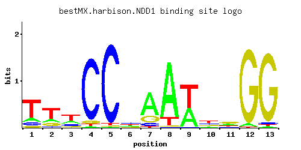
Transcriptional activator essential for nuclear division; localized to the nucleus; essential component of the mechanism that activates the
NDT80
↗
Meiosis-specific transcription factor required for exit from pachytene and for full meiotic recombination; activates middle sporulation gene
NHP10
↗
Protein related to mammalian high mobility group proteins; preferentially binds DNA ends, protecting them from exonucleatic cleavage; likely
NHP6A
↗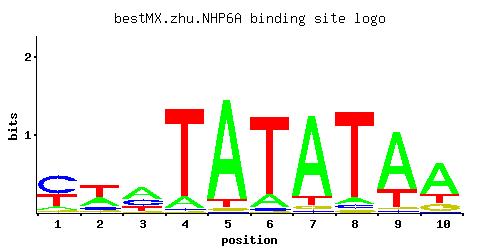
High-mobility group (HMG) protein that binds to and remodels nucleosomes; involved in recruiting FACT and other chromatin remodelling comple
NHP6B
↗
High-mobility group (HMG) protein that binds to and remodels nucleosomes; involved in recruiting FACT and other chromatin remodelling comple
NRG1
↗
Transcriptional repressor that recruits the Cyc8p-Tup1p complex to promoters; mediates glucose repression and negatively regulates a variety
NRG2
↗Transcriptional repressor that mediates glucose repression and negatively regulates filamentous growth; has similarity to Nrg1p
OAF1
↗Oleate-activated transcription factor, acts alone and as a heterodimer with Pip2p; activates genes involved in beta-oxidation of fatty acids
OPI1
↗Transcriptional regulator of a variety of genes; phosphorylation by protein kinase A stimulates Opi1p function in negative regulation of pho
ORC1
↗Largest subunit of the origin recognition complex, which directs DNA replication by binding to replication origins and is also involved in t
PDR1
↗Zinc cluster protein that is a master regulator involved in recruiting other zinc cluster proteins to pleiotropic drug response elements (PD
PDR3
↗
Transcriptional activator of the pleiotropic drug resistance network, regulates expression of ATP-binding cassette (ABC) transporters throug
PDR8
↗
Transcription factor; targets include ATP-binding cassette (ABC) transporters, major facilitator superfamily transporters, and other genes i
PHD1
↗
Transcriptional activator that enhances pseudohyphal growth; regulates expression of FLO11, an adhesin required for pseudohyphal filament fo
PHO2
↗
Homeobox transcription factor; regulatory targets include genes involved in phosphate metabolism; binds cooperatively with Pho4p to the PHO5
PHO4
↗
Basic helix-loop-helix (bHLH) transcription factor of the myc-family; binds cooperatively with Pho2p to the PHO5 promoter; function is regul
PIP2
↗Autoregulatory oleate-specific transcriptional activator of peroxisome proliferation, contains Zn(2)-Cys(6) cluster domain, forms heterodime
PPR1
↗Zinc finger transcription factor containing a Zn(2)-Cys(6) binuclear cluster domain, positively regulates transcription of genes involved in
PUT3
↗
Transcriptional activator of proline utilization genes, constitutively binds PUT1 and PUT2 promoter sequences and undergoes a conformational
RAP1
↗
DNA-binding protein involved in either activation or repression of transcription, depending on binding site context; also binds telomere seq
RDR1
↗Transcriptional repressor involved in the control of multidrug resistance; negatively regulates expression of the PDR5 gene; member of the G
RDS1
↗
Zinc cluster transcription factor involved in conferring resistance to cycloheximide
RDS2
↗
Zinc cluster transcriptional activator involved in conferring resistance to ketoconazole
REB1
↗
RNA polymerase I enhancer binding protein; DNA binding protein which binds to genes transcribed by both RNA polymerase I and RNA polymerase
REI1
↗
Cytoplasmic pre-60S factor; required for the correct recycling of shuttling factors Alb1, Arx1 and Tif6 at the end of the ribosomal large su
RFX1
↗
Major transcriptional repressor of DNA-damage-regulated genes, recruits repressors Tup1p and Cyc8p to their promoters; involved in DNA damag
RGM1
↗
Putative transcriptional repressor with proline-rich zinc fingers; overproduction impairs cell growth
RGT1
↗Glucose-responsive transcription factor that regulates expression of several glucose transporter (HXT) genes in response to glucose; binds t
RIM101
↗
Transcriptional repressor involved in response to pH and in cell wall construction; required for alkaline pH-stimulated haploid invasive gro
RLM1
↗
MADS-box transcription factor, component of the protein kinase C-mediated MAP kinase pathway involved in the maintenance of cell integrity;
RME1
↗
Zinc finger protein involved in control of meiosis; prevents meiosis by repressing IME1 expression and promotes mitosis by activating CLN2 e
ROX1
↗Heme-dependent repressor of hypoxic genes; contains an HMG domain that is responsible for DNA bending activity
RPH1
↗
JmjC domain-containing histone demethylase which can specifically demethylate H3K36 tri- and dimethyl modification states; transcriptional r
RPN4
↗
Transcription factor that stimulates expression of proteasome genes; Rpn4p levels are in turn regulated by the 26S proteasome in a negative
RSC3
↗Component of the RSC chromatin remodeling complex; essential gene required for maintenance of proper ploidy and regulation of ribosomal prot
RSC30
↗Component of the RSC chromatin remodeling complex; non-essential gene required for regulation of ribosomal protein genes and the cell wall/s
RSF2
↗
Zinc-finger protein involved in transcriptional control of both nuclear and mitochondrial genes, many of which specify products required for
RTG1
↗
Transcription factor (bHLH) involved in interorganelle communication between mitochondria, peroxisomes, and nucleus
RTG3
↗
Basic helix-loop-helix-leucine zipper (bHLH/Zip) transcription factor that forms a complex with another bHLH/Zip protein, Rtg1p, to activate
SFL1
↗Transcriptional repressor and activator; involved in repression of flocculation-related genes, and activation of stress responsive genes; ne
SFP1
↗
Transcription factor that controls expression of ribosome biogenesis genes in response to nutrients and stress, regulates G2/M transitions d
SIP4
↗
C6 zinc cluster transcriptional activator that binds to the carbon source-responsive element (CSRE) of gluconeogenic genes; involved in the
SKN7
↗Nuclear response regulator and transcription factor, part of a branched two-component signaling system; required for optimal induction of he
SKO1
↗Basic leucine zipper (bZIP) transcription factor of the ATF/CREB family, forms a complex with Tup1p and Ssn6p to both activate and repress t
SMP1
↗
Putative transcription factor involved in regulating the response to osmotic stress; member of the MADS-box family of transcription factors
SNF1
↗
AMP-activated serine/threonine protein kinase found in a complex containing Snf4p and members of the Sip1p/Sip2p/Gal83p family; required for
SNT2
↗
DNA binding protein with similarity to the S. pombe Snt2 protein; computational analysis suggests a role in regulation of expression of gene
SOK2
↗Nuclear protein that plays a regulatory role in the cyclic AMP (cAMP)-dependent protein kinase (PKA) signal transduction pathway; negatively
SPT15
↗
TATA-binding protein, general transcription factor that interacts with other factors to form the preinitiation complex at promoters, essenti
SPT2
↗
Protein involved in negative regulation of transcription; required for RNA polyadenylation; exhibits regulated interactions with both histon
SPT23
↗ER membrane protein involved in regulation of OLE1 transcription, acts with homolog Mga2p; inactive ER form dimerizes and one subunit is the
SRD1
↗
Protein involved in the processing of pre-rRNA to mature rRNA; contains a C2/C2 zinc finger motif; srd1 mutation suppresses defects caused b
STB1
↗
Protein with a role in regulation of MBF-specific transcription at Start, phosphorylated by Cln-Cdc28p kinases in vitro; unphosphorylated fo
STB2
↗Protein that interacts with Sin3p in a two-hybrid assay and is part of a large protein complex with Sin3p and Stb1p
STB3
↗Ribosomal RNA processing element (RRPE)-binding protein involved in the glucose-induced transition from quiescence to growth; restricted to
STB4
↗Protein that binds Sin3p in a two-hybrid assay; contains a Zn(II)2Cys6 zinc finger domain characteristic of DNA-binding proteins; computatio
STB5
↗
Transcription factor, involved in regulating multidrug resistance and oxidative stress response; forms a heterodimer with Pdr1p; contains a
STE12
↗Transcription factor that is activated by a MAP kinase signaling cascade, activates genes involved in mating or pseudohyphal/invasive growth
STP1
↗
Transcription factor, undergoes proteolytic processing by SPS (Ssy1p-Ptr3p-Ssy5p)-sensor component Ssy5p in response to extracellular amino
STP2
↗
Transcription factor, activated by proteolytic processing in response to signals from the SPS sensor system for external amino acids; activa
STP3
↗Zinc-finger protein of unknown function, possibly involved in pre-tRNA splicing and in uptake of branched-chain amino acids
STP4
↗
Protein containing a Kruppel-type zinc-finger domain; has similarity to Stp1p, Stp2p, and Stp3p
SUM1
↗Transcriptional repressor required for mitotic repression of middle sporulation-specific genes; also acts as general replication initiation
SUT1
↗Transcription factor of the Zn[II]2Cys6 family involved in sterol uptake; involved in induction of hypoxic gene expression
SUT2
↗
Putative transcription factor; multicopy suppressor of mutations that cause low activity of the cAMP/protein kinase A pathway; highly simila
SWI4
↗
DNA binding component of the SBF complex (Swi4p-Swi6p), a transcriptional activator that in concert with MBF (Mbp1-Swi6p) regulates late G1-
SWI5
↗
Transcription factor that activates transcription of genes expressed at the M/G1 phase boundary and in G1 phase; localization to the nucleus
SWI6
↗Transcription cofactor, forms complexes with DNA-binding proteins Swi4p and Mbp1p to regulate transcription at the G1/S transition; involved
TBF1
↗
Telobox-containing general regulatory factor; binds to TTAGGG repeats within subtelomeric anti-silencing regions (STARs) and possibly throug
TBS1
↗Putative protein of unknown function; the authentic, non-tagged protein is detected in highly purified mitochondria in high-throughput studi
TEA1
↗
Ty1 enhancer activator required for full levels of Ty enhancer-mediated transcription; C6 zinc cluster DNA-binding protein
TEC1
↗
Transcription factor required for full Ty1 expression, Ty1-mediated gene activation, and haploid invasive and diploid pseudohyphal growth; T
THI2
↗Zinc finger protein of the Zn(II)2Cys6 type, probable transcriptional activator of thiamine biosynthetic genes
THO2
↗Subunit of the THO complex, which is required for efficient transcription elongation and involved in transcriptional elongation-associated r
TOD6
↗PAC motif binding protein involved in rRNA and ribosome biogenesis; subunit of the RPD3L histone deacetylase complex; Myb-like HTH transcrip
TOS8
↗
Homeodomain-containing protein and putative transcription factor found associated with chromatin; target of SBF transcription factor; induce
TYE7
↗Serine-rich protein that contains a basic-helix-loop-helix (bHLH) DNA binding motif; binds E-boxes of glycolytic genes and contributes to th
UGA3
↗
Transcriptional activator necessary for gamma-aminobutyrate (GABA)-dependent induction of GABA genes (such as UGA1, UGA2, UGA4); zinc-finger
UME1
↗
Negative regulator of meiosis, required for repression of a subset of meiotic genes during vegetative growth, binding of histone deacetylase
UME6
↗
Key transcriptional regulator of early meiotic genes, binds URS1 upstream regulatory sequence, couples metabolic responses to nutritional cu
UPC2
↗Sterol regulatory element binding protein, induces transcription of sterol biosynthetic genes and of DAN/TIR gene products; Ecm22p homolog;
URC2
↗Putative Zn(II)2Cys6 motif containing transcription factor; non-essential gene identified in a screen for mutants with increased levels of r
USV1
↗Putative transcription factor containing a C2H2 zinc finger; mutation affects transcriptional regulation of genes involved in growth on non-
WAR1
↗Homodimeric Zn2Cys6 zinc finger transcription factor; binds to a weak acid response element to induce transcription of PDR12 and FUN34, enco
XBP1
↗Transcriptional repressor that binds to promoter sequences of the cyclin genes, CYS3, and SMF2; expression is induced by stress or starvatio
YAP1
↗
Basic leucine zipper (bZIP) transcription factor required for oxidative stress tolerance; activated by H2O2 through the multistep formation
YAP3
↗Basic leucine zipper (bZIP) transcription factor
YAP5
↗
Basic leucine zipper (bZIP) transcription factor
YAP6
↗Putative basic leucine zipper (bZIP) transcription factor; overexpression increases sodium and lithium tolerance; computational analysis sug
YAP7
↗
Putative basic leucine zipper (bZIP) transcription factor
YDR026C
↗Function unknown
YER130C
↗
Function unknown
YER184C
↗
Function unknown
YGR067C
↗
Function unknown
YHP1
↗One of two homeobox transcriptional repressors (see also Yox1p), that bind to Mcm1p and to early cell cycle box (ECB) elements of cell cycle
YKL222C
↗
Function unknown
YLL054C
↗
Function unknown
YLR278C
↗
Function unknown
YML081W
↗Function unknown
YNR063W
↗Function unknown
YOX1
↗Homeodomain-containing transcriptional repressor, binds to Mcm1p and to early cell cycle boxes (ECBs) in the promoters of cell cycle-regulat
YPR013C
↗
Function unknown
YPR015C
↗
Function unknown
YPR022C
↗
Function unknown
YPR196W
↗Function unknown
YRM1
↗Zn2-Cys6 zinc-finger transcription factor that activates genes involved in multidrug resistance; paralog of Yrr1p, acting on an overlapping
YRR1
↗
Zn2-Cys6 zinc-finger transcription factor that activates genes involved in multidrug resistance; paralog of Yrm1p, acting on an overlapping
ZAP1
↗
Zinc-regulated transcription factor; binds to zinc-responsive promoters to induce transcription of certain genes in presence of zinc, repres
No factors match that filter.